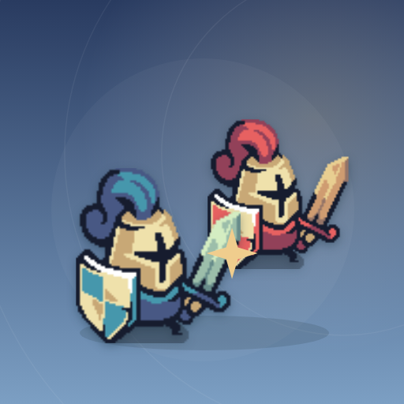

<- all projects

Bannerbound
PC
Volume
Live
Build a six-card deck, deploy troops and hold the bridges.
Bannerbound is a tactical card battle game about decks, timing and bridge control. Build a six-card deck from eight cards, every one available from the start, then deploy squires, archers, lancers, healers, shieldguards and scout trios and cast Fireball and Rally against a computer opponent. Play from a four-card hand with a preview of the next card and regenerating energy. Win by breaking the rival castle or leading when the three-minute timer ends. Six rotating captains bring their own decks and tactics across a campaign, practice and a race to 100 bridge-control points.